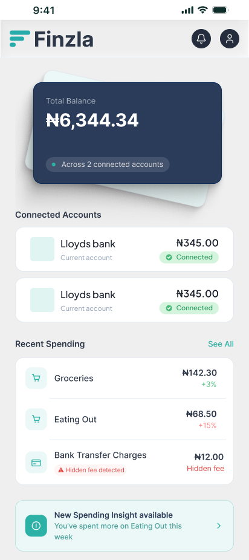
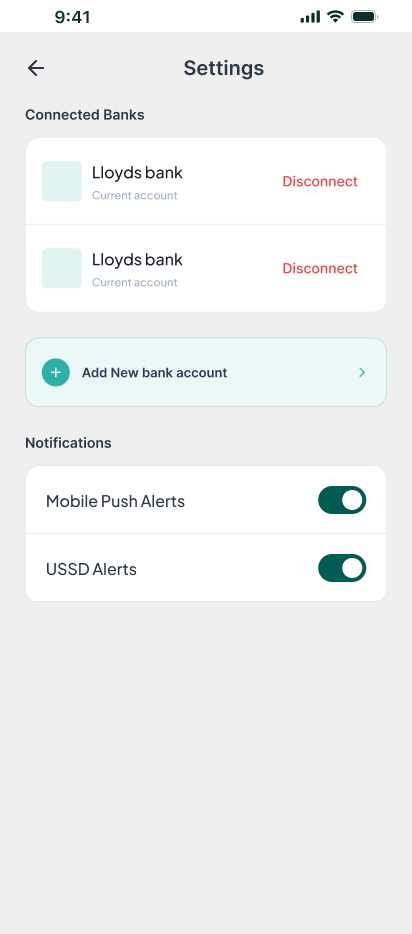

Finzla —
See All Your Money,
In One Place.
A personal finance aggregator designed for people who manage multiple bank accounts — built from the ground up as a freelance project, from research through to live prototype.
1. The Problem Nobody Talks About
Most people don't have one bank account. They have two, three, sometimes ten. This is especially common in the Nigerian diaspora community — where having multiple accounts across different banks is just normal life. But every app assumes you bank in one place.
The result? People stand at the checkout trying to work out which account has enough in it. They log into five different apps to get a picture of where they are. And all the while, hidden bank transfer charges are quietly eating into their balance — charges most people don't even know they're paying.

2. The Insight That Shaped the Design
The brief came from a client who ran a market stall and noticed the pattern firsthand. Customers would hold up the queue searching across accounts. The insight was simple: people don't need another banking app — they need one place that understands how they actually use money across all of them.
Rather than connecting directly to banks, Finzla uses open banking APIs and aggregator partners who've already done the security and verification legwork — meaning we could move fast without building the compliance infrastructure from scratch.


3. Onboarding — No Account, No App
The onboarding is deliberate. Connecting a bank account isn't optional — it's the entire point of the product. If a user tries to skip it, they loop back to the start. There's no value in the app without it, so we don't pretend otherwise.
Sign up is clean and minimal — name, email, phone with country dial code. The login screen supports social auth (Google, Facebook, Apple) to reduce friction for returning users. Both screens keep the hero balance card visible at the top as a constant reminder of what they're about to unlock.


4. Connecting Banks — Designed for Trust
This is the moment that makes or breaks the product. Asking someone to connect their bank account is a significant ask — the design has to feel secure, familiar, and frictionless.
Users search for or select their bank, then choose which accounts within that bank to connect. Where a bank has multiple accounts — savings, current, business — we show each one clearly with its balance and account number. The user stays in control of exactly what they share.

5. The Dashboard — Everything in One View
The dashboard is the core of the product. Total balance across all connected accounts sits at the top — masked by default for privacy, revealed on tap. Below it, each connected account is listed individually so users always know where each pound or naira sits.
Recent spending is categorised automatically — Groceries, Eating Out, and critically, Bank Transfer Charges called out as a separate line. Most banking apps bury these. Finzla surfaces them deliberately, because that's one of the product's core promises.
At the bottom, an AI-driven nudge card appears when the system detects a pattern — "You've spent more on Eating Out this week." Phase 1 is about awareness, not judgement.

6. Settings — Staying in Control
Users can add or disconnect bank accounts at any time, and control notification preferences — mobile push alerts and USSD alerts independently. USSD matters here: for users in Nigeria where data access can be limited, SMS-based notifications aren't a fallback, they're a primary channel.
Market
UK & Nigeria
Type
Mobile Consumer App
Status
Live Prototype
What Made This Different
Designing for a real community
The product came from lived experience — a client who saw the problem firsthand in their own business. That gave the brief a sharpness that most projects don't have. Every design decision was grounded in a real behaviour, not an assumed one.
Phased thinking from day one
Phase 1 is deliberately narrow — understand your spending, see your hidden fees, connect your accounts. We resisted the urge to build budgeting tools, transfer flows, and savings goals into the first version. The constraint made the design cleaner.
Consumer design in a regulated space
Open banking APIs, aggregator partners, data masking, security-first onboarding — this project sits at the same intersection of trust and usability I work with in B2B FinTech, just on the consumer side. Different constraints, same discipline.
USSD as a first-class channel
Building for both UK and Nigerian markets meant designing notification systems that worked without reliable data access. That's not an edge case — for a significant portion of the target audience, it's the norm.